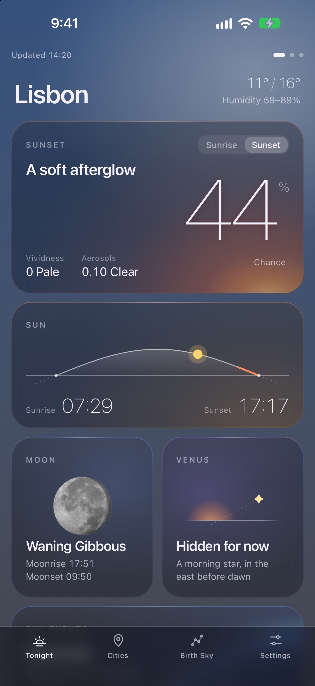
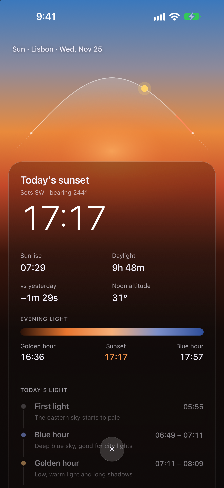
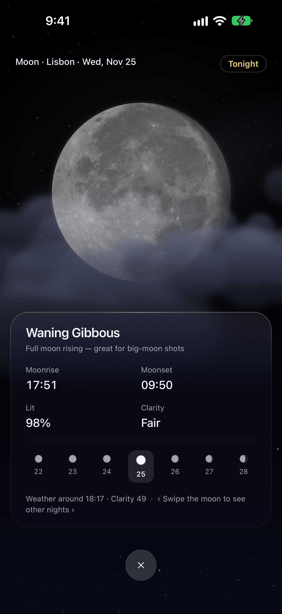
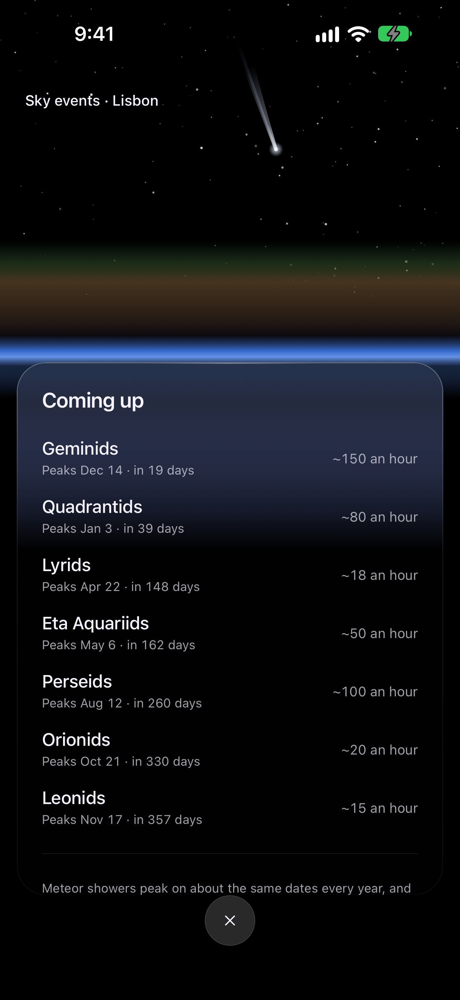
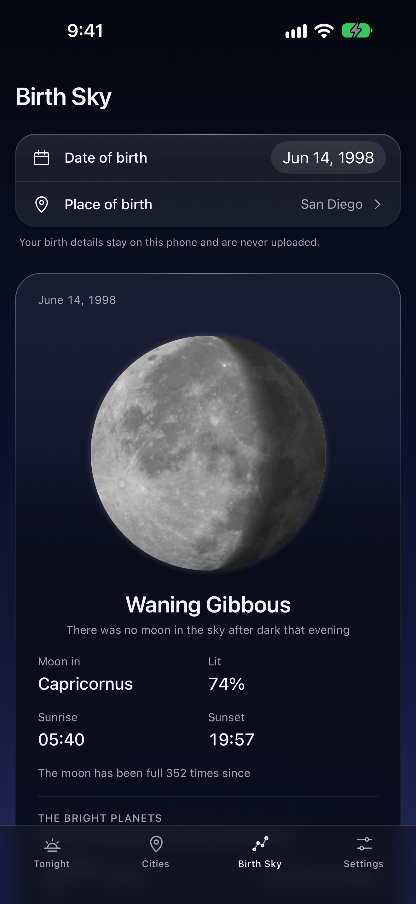

Is tonight's sunset
worth going out for?
worth going out for?
A sunset forecast for where you are

Find the best
evening this week
evening this week
Seven days of sunset and sunrise chances

Golden hour, blue hour,
to the minute
to the minute
And which way to face when the sun goes down

The moon,
night by night
night by night
Phase, moonrise and how clear it will look

Venus, meteor showers
and the rest of the sky
and the rest of the sky
Know when it is worth looking up

The sky on the day
you were born
you were born
Your birthday moon, saved as a poster
